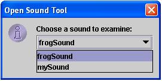
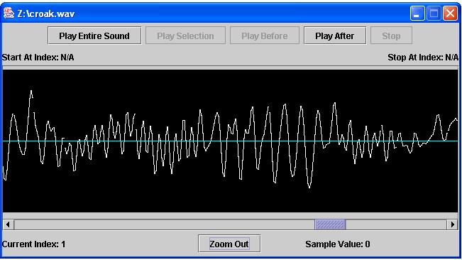
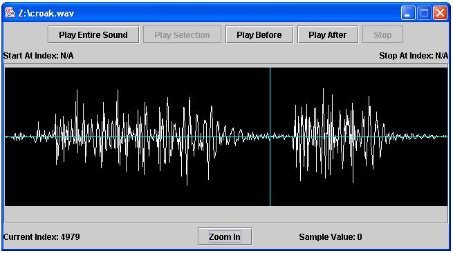
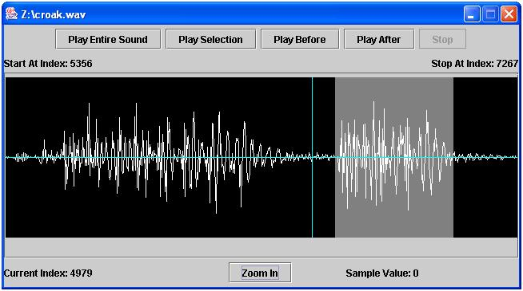

The SoundTool allows you to explore a sound by looking at a visual representation of that sound.
Opening a Sound in the SoundTool
- In order to view a sound, you must have first created a sound
in JES. There are two ways to do this in the command area:
- mySound = makeSound(filename)
- mySound = makeEmptySound(numSeconds)
- Once you have a sound, there are two ways to view it in the
SoundTool:
- In the JES command window:
-
type openSoundTool(mySound)

-
type openSoundTool(mySound)
- From the JES menu bar:
-
From the MediaTools menu, choose SoundTool.

-
You will then be prompted to choose the sound you want
to view.
Select the sound from the list

-
and choose 'OK'.

-
From the MediaTools menu, choose SoundTool.
- In the JES command window:
Looking at the Sound
When you open a sound, you will see a screen like this:

-
The window title is the filename from which the sound
originated. (Note: If you created the sound using
makeEmptySound(numSeconds)and you haven't saved it to a file yet, then you will see "no file name" instead.) -
At the top of sound viewer, there are lots of different
buttons:
-
Play Entire Sound plays the entire sound from start
to finish.
- Play Selection plays the selected region of the sound. When you first open the SoundTool, there is no region selected, and so this button is disabled. See Selecting a Region of the Sound for more information.
- Play Before plays the sound from the begning up to the currently selected sample. When you first open the SoundTool, the very first sample will be selected by default. Therefore, since there is no sound before the first sample, the Play Before button is disabled until you choose a different sample. See Choosing a Single Sample in the Sound for more information.
- Play After is simmilar to Play Before, only it plays from the currently selected sample to the end of the sound. Again, see Choosing a Single Sample in the Sound for more information on using this.
- Stop is only enabled while a sound is playing. You can use it to interrupt any type of play.
-
Play Entire Sound plays the entire sound from start
to finish.
When you open the SoundTool, you first see the image zoomed out. This means that the wave form has been compressed so that it will fit inside the SoundTool window.
If you click the Zoom In button, you will see one sample represented per pixel on your screen. Since sounds are very long, a scroll bar appears so that you can move through the sound:

You will notice that the button has changed to read Zoom Out. Clicking it will now return you to the compressed format that you started with.
All functionality for selecting a sample, selecting a region, and playing the sound work exactly the same whether you're zoomed in or out.
If you want to edit or copy just a portion of a digital sound, it can be useful to find the index of a specific point, or sample, in that sound. Other times, it may be useful to find the amplitude, or value, of one of the samples in a sound.
In order to find out information about a specific point, or sample, in a sound, you just need to click on the wave form at that point. You will see a light blue bar appear on the wave form designating the currently selected sample. You can test where you are using the Play Before and Play After buttons. When you find the right place, simply note the index and/or value of the current sample as displayed at the bottom of the SoundTool.

If you want to pick out a portion of a sound (like a single word), it can be useful to find the starting and ending points of a region in that sound.
You can do this in SoundTools by selecting a region of the sound. Simply click and drag the mouse across the region of the sound you want to select. You will see the background shade change to light gray in the area you are selecting. When you let go of the mouse, you can use the Play Selection button to test what region of the sound you have selected. When you find the right portion of the sound, you can note the starting and ending points by reading the values displayed at the top of the SoundTool next to Start At Index and Stop At Index. Note that it doesn't matter if you drag from right-to-left, or left-to-right, the SoundTool will always choose the left-most index to start at, and the right-most index to stop at.
